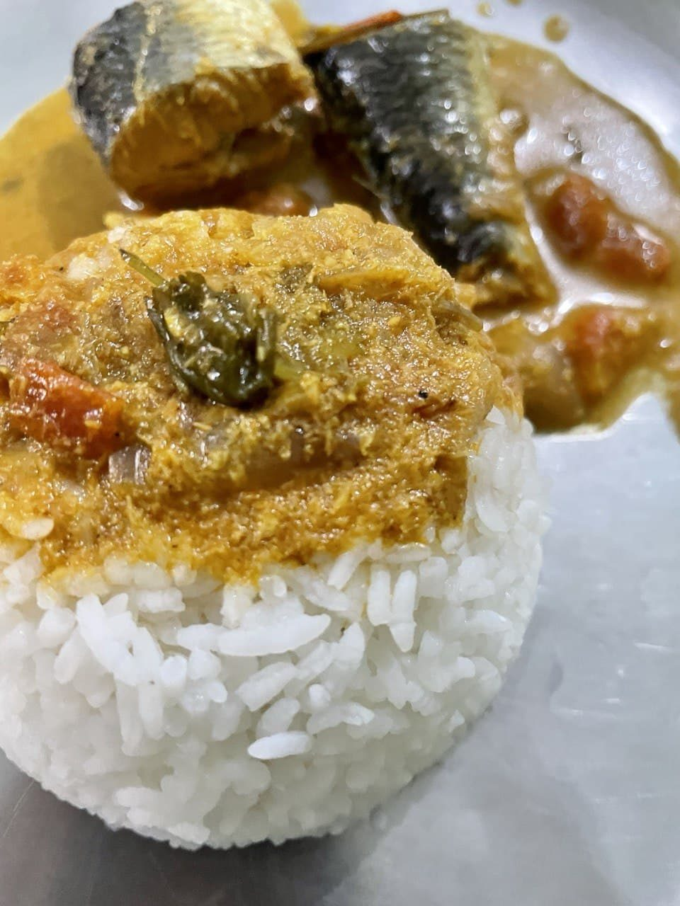

Mithila Machh Posto
river fish simmered in a ground poppy seed and mustard gravy, no onion or garlic

Contains: fish, mustard
Checked against the ingredient list for ten allergens: milk, egg, fish, crustaceans, tree nuts, peanuts, sesame, mustard, soy and gluten. Brands vary, so read the label on anything new to you.
Ingredients
Quantities for 4.
- 700g rohu or katla, cut into 2cm steaks Fishany firm freshwater fish works
- 4 tbsp Poppy Seeds
- 2 tsp Mustard Seedssoak with the poppy seeds
- 5 tbsp Mustard Oil
- 1 tsp Nigella
- 5, slit Green Chilli
- 1.5 tsp Turmeric1 tsp for rubbing the fish, the rest for the gravy
- 0.5 tsp Chilli Powder
- to taste Salt
- 400 ml Water
- 2 tbsp, chopped Coriander Leavesoptional
Cookware
stovetop, kadhai, blender
Before you start
- Soak the poppy seeds and mustard seeds together in 100 ml warm water for 30 minutes before grinding, or the paste will stay gritty.
- Rub the fish steaks with 1 tsp turmeric and a good pinch of salt and leave 15 minutes. It firms the surface so the pieces do not break.
- Pat the fish completely dry before it meets the oil.
Method
- Grind the soaked poppy and mustard seeds with 2 of the green chillies and 3 tbsp of their soaking water to a smooth pale paste.Grind in short bursts. Mustard turns bitter if the blender heats it up.
- Heat the mustard oil in a kadhai until it smokes, then lower the flame.
- Slide in the fish and fry 2 minutes a side until the surface is set and pale gold, then lift out onto a plate.Do not brown it hard. The fish finishes cooking in the gravy.
- Crackle the nigella seeds in the remaining oil for 20 seconds until they smell smoky.
- Add the ground paste with the remaining turmeric and the chilli powder and cook on low for 4 minutes, stirring constantly.Keep the heat low and keep it moving; mustard paste scorches in seconds.
- Pour in the water, add the remaining slit chillies and salt, and simmer 5 minutes until the gravy thickens enough to coat a spoon.
- Return the fish, spoon gravy over each piece, cover and simmer 6 minutes on low.
- Drizzle over 1 tsp raw mustard oil, scatter the coriander and rest 5 minutes off the heat before serving with plain rice.
Safe temperatures: Fish is done at 63°C / 145°F, or when it turns opaque and flakes easily. Reheat leftovers to 74°C / 165°F. FoodSafety.gov
Storage
Best eaten the day it is made. Keeps 1 day refrigerated; reheat covered on low heat without stirring so the fish stays whole.
Nutrition Good estimate
High protein: 38 g a serving, 38% of the calories
| Per serving218 g | Per 100 g | |
|---|---|---|
| Calories | 400 kcal | 184 kcal |
| Protein | 37.9 g | 17 g |
| Carbohydrate | 4.8 g | 2 g |
| of which sugars | 0.8 g | 0 g |
| Fibre | 2.7 g | 1 g |
| Fat | 25.2 g | 12 g |
| of which saturated | 3.1 g | 1 g |
| of which unsaturated | 19.7 g | 9 g |
Estimated from raw ingredients using USDA FoodData Central.
Times, yields, allergens and nutrition are guidance. Use your own judgement on doneness and on storing. More in About.